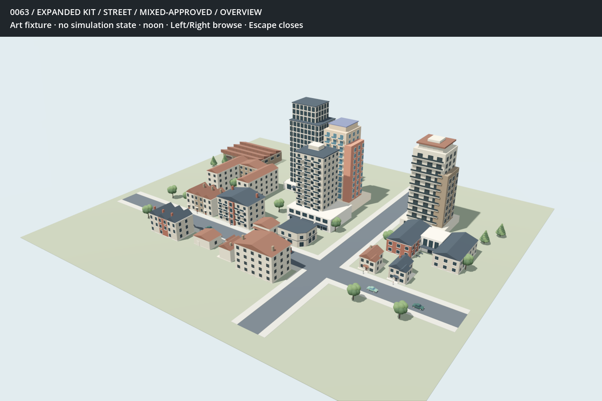
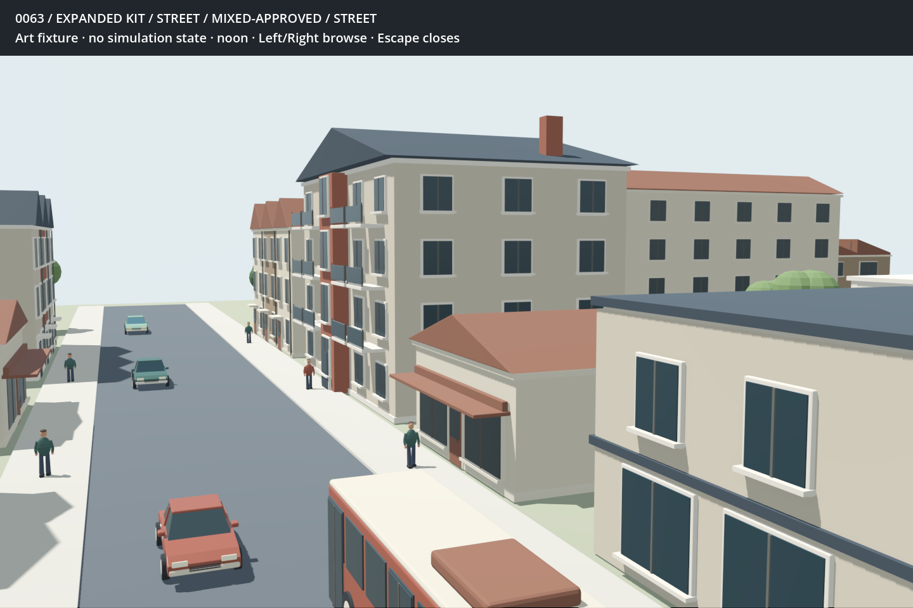
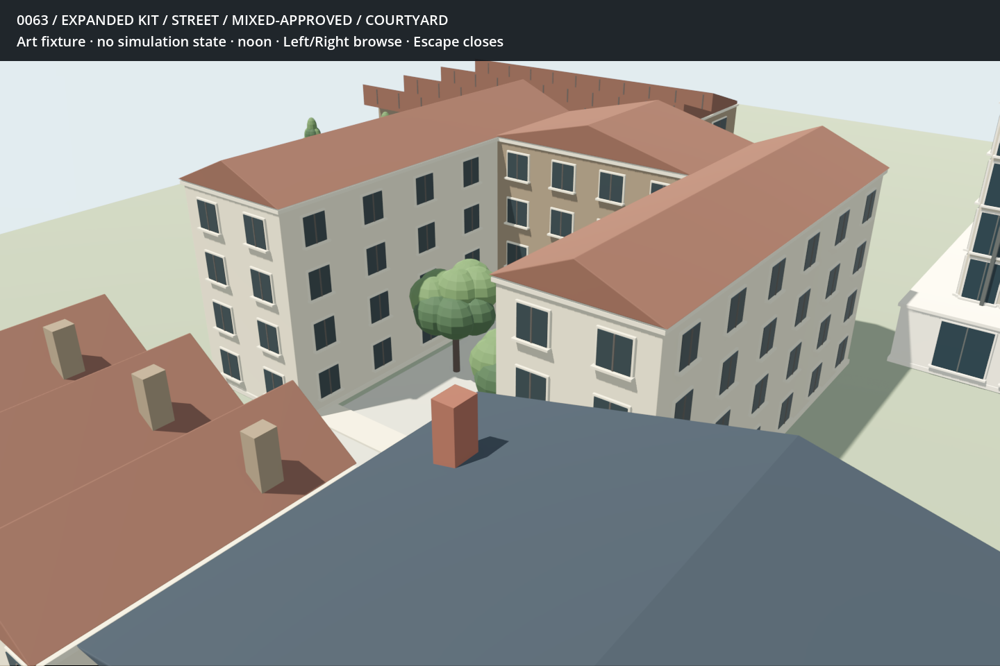
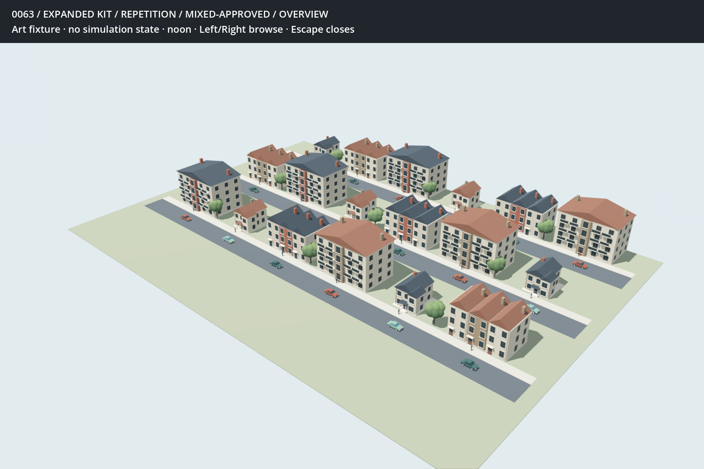
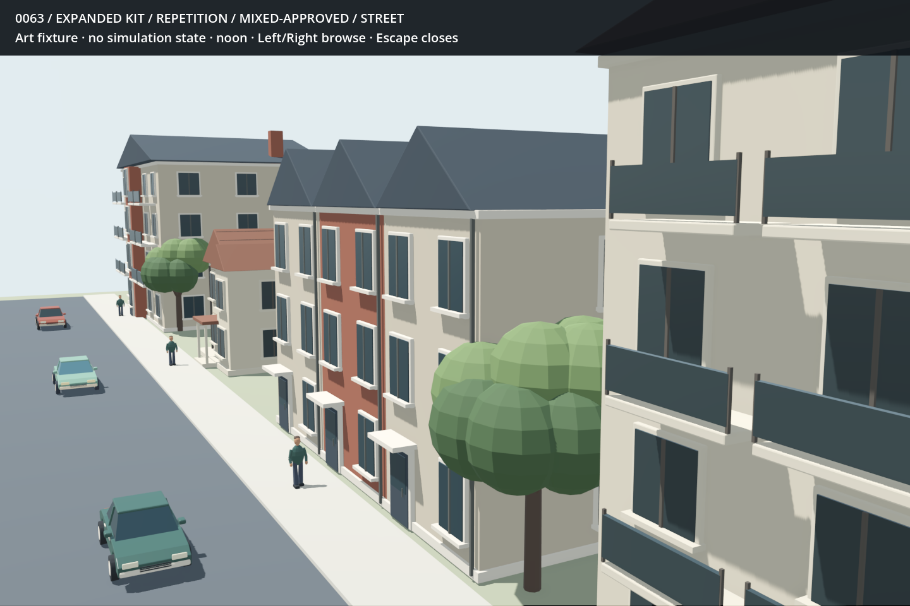

BOROUGH / 0063 / EXPANDED KIT 1From specimens to a street
Eleven new roster specimens and two tree forms, built around the construction and palettes you liked. Narrow terraces, walk-ups, an open courtyard, office and mixed-use towers, two shops, a factory, a school, a bus and a walker. Each new specimen has matched slate/earth whole and close views. Tree foliage, bark, skin and trousers retain their own colours.
The street keeps the approved realistic house and car, and both residential tower models. The repetition view deliberately reuses housing models: this is a check on how obvious those repeats remain, not a claim of finished neighbourhood variety.
Initial procedural constructions. Glass remains opaque; fine textures, interiors, motion, night, live state responses and measured rendering costs remain outstanding. Mesh counts are descriptive only. The new models have not yet received player feedback.
A street, then repetition
Hand-arranged art fixtures at model scale, with both earlier residential towers and varied car colours. Street and courtyard paving are decorative context. No simulated city state is represented.
Street · overview
Street · street
Street · courtyard
Repetition · overview
Repetition · street
Attached Townhouse
Close construction views
Walk Up Apartment
Close construction views
Courtyard Apartment
Close construction views
Office Tower
Close construction views
Mixed Use Tower
Close construction views
Small Shop
Close construction views
Corner Shop
Close construction views
Factory With Office
Close construction views
School
Close construction views
Bus
Close construction views
Walker
Close construction views
Round Tree
Close construction views
Warm Slate
Earth Terracotta
Conical Tree
Warm Slate
Earth Terracotta
Close construction views
Warm Slate
Earth Terracotta